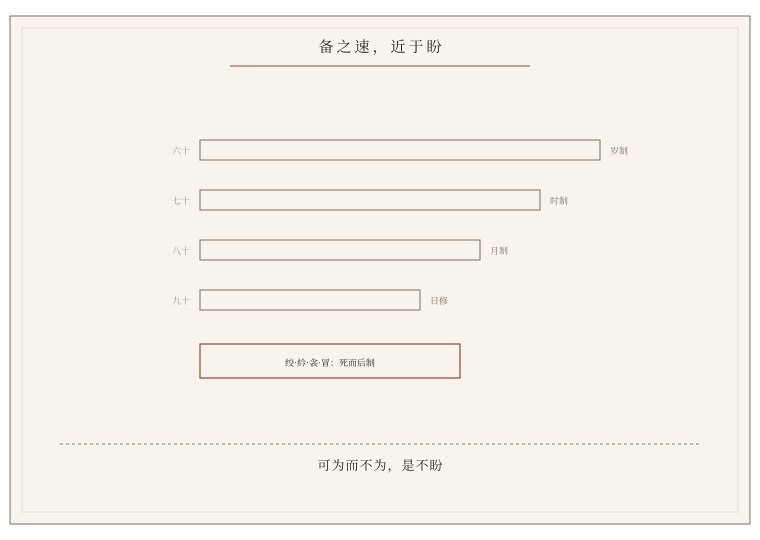

檀弓上 · 三·七十 · 第 273 课
喪具，君子恥具。一日二日而可為也者，君子弗為也。
说什么事：丧事用的器物，君子以「早早全备」为耻；凡是当天两天就能做成的，君子不做。
落在哪一层：礼，兼及礼数与礼意。论「备之速，近于盼」。
为何编在此位：上节论疾舒之中，此节论缓急之用。「一日二日可为」者不为，正是把缓急用在人情上。
【经】喪具，君子恥具。一日二日而可為也者，君子弗為也。
【注】辟不怀也。丧具，棺衣之属。谓绞、紟、衾、冒。
【疏】「辟不怀」，宣八年《左传》云「礼，卜葬先远日，辟不怀也」——怀，思也；葬用近日，则是不思念其亲。今送死百物皆具，是速弃其亲；今未即办具，是辟不思亲之事也。云「丧具，棺衣之属」者，棺即预造，衣亦渐制，但不一时顿具，故《王制》云「六十岁制，七十时制，八十月制，九十日修，唯绞、紟、衾、冒，死而后制」是也。
丧具 丧事所用器物。注「棺衣之属」。
耻具 以「具」为耻。具，全备。
辟不怀 避开「不思其亲」之嫌。辟，避。
一日二日可为 一两天就能做成的东西。
绞、紟、衾、冒 敛尸所用：绞（束衣之绳）、紟（单被）、衾（被）、冒（覆尸之囊）。
岁制、时制、月制、日修 六十岁即可备棺，七十按季备，八十按月备，九十按日修。
丧事用的东西，君子耻于早早全备。凡是一两天就能做成的，君子不做。
此节一句正面、一句反面，说的其实是同一个理：备得太齐，像是盼着。
注四字「辟不怀也」，避「不怀」——不思念。疏引《左传》宣八年「卜葬先远日，辟不怀也」为证：葬用近日，是不思念其亲；今送死百物皆具，是速弃其亲。
故礼把丧具分成两段：棺可预造（六十岁即可制），衣可渐制（七十时、八十月、九十日），唯绞、紟、衾、冒四物「死而后制」——因为这四样一两天就能做成。能做而不做，正是「不盼」。
第一层 「具」为什么可耻 具者，全备。全备则事已办完，只等人死。此节所耻的不是「准备」，是「备完之后那份心」。疏说得直：「速弃其亲。」
第二层 岁、时、月、日的分等 《王制》的分法极妙：越是大件、越是难办，越早备；越是小件、越是速成，越晚备。这不是效率逻辑，是心情逻辑：棺木要多年，是「我终要为你备此物」的长期挂念；绞紟衾冒一日可成，若也早早备下，则「我已在等这一天」。
第三层 「弗为」的分寸 不是「不能为」，是「不为」。能做而不做，才有礼。若做不成而不做，只是无能。此节的分量全在「可」字上。
第四层 与上节相照 272 论「虽遽不陵节」，此节论「可为而不为」。一急一缓，皆是自主的节：该快的时候不越，该慢的时候不抢。
与今日何干 今人办事讲「提前量」：一切提前备好才算负责。此节说，有些事提前备好是不怀。不是教人拖延，是提醒：效率之外还有一层心情，而那一层也属于礼。
| 左 | 右 |
|---|---|
| 丧具 | 棺衣之属 |
| 君子耻具 | 耻一时顿具 |
| 辟不怀 | 避不思亲之嫌 |
| 百物皆具 | 速弃其亲 |
| 六十岁制 | 棺可预 |
| 七十时、八十月、九十日 | 衣渐制 |
| 绞紟衾冒 | 死而后制 |
| 可为而不为 | 礼在「可」字上 |
画一间器物房，视点平。房中棺木靠墙立着（已成，木色旧）、一叠叠素布整齐码在架上；房中央一张空案，案上只放着一束未搓的麻绳与一块未裁的素帛。门外一位老者（深衣、负手）正欲离去，回头看了一眼那张空案。不写文字、不画人面细节。赭色只用在空案上那束麻绳的束结与棺木侧的一道旧痕。
